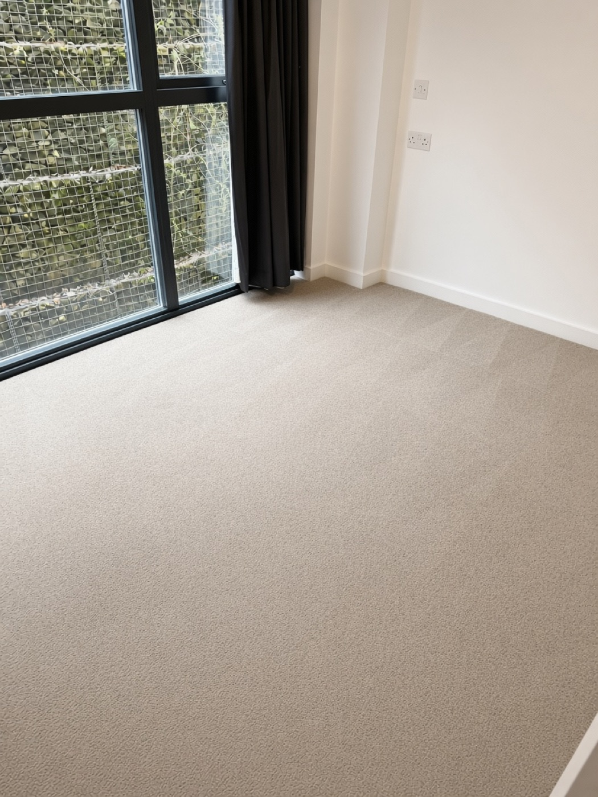

A room-by-room end of tenancy cleaning checklist for tenants and landlords: what to clean, in what order, the areas that are most often missed, and how to document the result.
Moving out is stressful enough without worrying about your deposit. Cleaning is one of the most common reasons for disputes at the end of a tenancy, and it is usually the details that are missed, rather than the obvious jobs. This checklist walks through the property room by room, in a sensible order.
The standard to aim for: the property should be returned in the same condition as at the start of the tenancy, allowing for fair wear and tear. Your tenancy agreement and check-in inventory are your reference points.
Before you start
- Read your tenancy agreement for cleaning obligations, and any wording about carpets or professional cleaning.
- Find your check-in inventory. Compare the starting condition with the way the property looks now.
- Gather supplies or book a professional clean. Do not forget ladders or a step stool for high surfaces.
- Clear the property of belongings first. It is much easier to clean empty rooms.
- Work top to bottom, and do carpets last.
Kitchen
The kitchen is where most deductions come from.
- Oven, hob, grill and extractor: remove grease and burnt-on food, and clean the racks and trays
- Inside and outside of the fridge and freezer: defrost, wipe, and leave doors ajar
- Inside and outside of cupboards and drawers, including handles
- Microwave, dishwasher and washing machine: filters, seals, and detergent drawers
- Sink, taps and drain: remove limescale and residue
- Worktops, splashbacks, tiles and grout
- Floor, including under and behind appliances if you can move them
Bathroom
- Descale the bath, shower, taps and showerhead
- Clean the toilet: inside the bowl, under the rim, the cistern and the base
- Wash tiles and grout, and treat any mould or mildew
- Clean mirrors, cabinets and shelves, inside and out
- Clean the extractor fan cover and any vents
- Wash the floor and the edges where it meets the wall
Bedrooms and living areas
- Dust ceilings, light fittings, picture rails and corners for cobwebs
- Wipe skirting boards, door frames, doors and light switches
- Clean inside wardrobes and built-in storage
- Wipe radiators, including behind and between the fins
- Clean windows, sills and frames, inside, and outside where you can safely reach
- Remove marks from walls where it is possible to do so without damaging the paint
Floors and carpets
Carpets are usually cleaned last, once everything else is finished. Vacuum thoroughly and treat any stains. Many landlords and letting agents expect carpets to be professionally cleaned, and some tenancy agreements say so explicitly, so check yours. A professional hot-water extraction clean also helps remove the odours and dust that build up over a tenancy. Keep any receipt as proof. See our carpet cleaning and end of tenancy cleaning pages.
The areas most often missed
- The top of kitchen cupboards and wardrobes
- Inside the oven door, between the glass panes
- Washing machine drawer and the door seal
- Grout lines and shower screens
- Light switches, door handles and plug sockets
- Window tracks and sills
- Balconies, patios, outbuildings and communal areas that you were responsible for
Document everything
When you have finished, photograph every room, including the inside of the oven and the carpets. Date-stamped photos can be valuable if there is a disagreement later. Ask for a joint check-out inspection if you can, and keep a copy of any report.
Cleaning yourself or booking a professional
You can certainly do an end of tenancy clean yourself, but it takes time, and it is easy to run short on the last day of a move. A professional team will work through the property methodically and bring the right equipment for ovens, carpets and limescale. If you decide to book, make sure you agree exactly what is included, and keep the receipt.
A simple timeline
Two weeks before you leave
- Re-read your tenancy agreement and inventory
- Decide whether you will clean yourself or book a professional
- Book any carpet cleaning, as slots fill up at busy times of year
- Start decluttering, so that rooms are easier to clean
The week before
- Deep clean the oven, fridge and other appliances
- Clean inside cupboards, wardrobes and drawers as you empty them
- Descale taps, showers and the kettle
- Wash curtains, if they belong to you, and any soft furnishings that are part of the property
On moving-out day
- Remove the last of your belongings and rubbish
- Dust, wipe and clean from top to bottom
- Vacuum floors and carpets, and mop hard floors
- Take final photographs and meter readings
- Return keys, and keep proof that you did
Walls, marks and paint
Walls often pick up scuffs, fingerprints and the marks left by furniture or picture hooks. Gently wipe marks with a barely damp cloth and a little mild detergent, testing in a corner first. Be careful with matt paint, which can mark easily if you rub. Do not repaint unless your landlord agrees. If you have put up shelves or pictures, check your agreement on whether you need to repair holes.
Gardens, balconies and outbuildings
If you have exclusive use of a garden, balcony or shed, make sure it is tidy. Remove rubbish, sweep patios and paths, clear any pet waste, and make sure bins are empty. These areas are often forgotten until the last minute.
Deposits and what to expect
In England, deposits for assured shorthold tenancies must be held in a government-approved protection scheme. If you and your landlord disagree about deductions, the scheme provides a free dispute resolution service. The more evidence you have, such as photos, the inventory and receipts, the stronger your position. For the details that apply to you, check the guidance on gov.uk or from your protection scheme.
The most common reasons for deductions are dirty ovens, stained or smelly carpets, limescale in bathrooms, and general lack of cleaning. Those are exactly the areas to focus on.
DIY or professional: which is better?
- DIY saves money if you have the time, the tools and a manageable property. The risk is running out of time or energy on the last day.
- Professional costs more, but it is faster, uses proper equipment for ovens, carpets and limescale, and leaves you free to focus on moving.
- A mixture works well for many people: clean the property yourself and book a professional for the carpets and perhaps the oven, which tend to be the hardest jobs.
For landlords and letting agents
Cleaning between tenancies helps a property rent faster and makes check-in inspections smoother. A consistent clean, with before and after photographs, protects you and gives the next tenant the right start. We can also help with commercial and rental properties, so see our commercial cleaning page.
Frequently asked questions
Do I have to get the carpets professionally cleaned?
It depends on your tenancy agreement. Some require it, and others only require that the property is returned clean. If you are unsure, ask your landlord or letting agent, and keep proof if you do book a clean.
What is fair wear and tear?
This means the normal ageing of a property through everyday use, such as slightly worn carpet in a hallway. It is different from damage or dirt that a tenant should have cleaned. Deposit protection schemes publish guidance on the difference.
Should I clean before or after my belongings go?
After. Clean empty rooms, so that nothing gets dirty again while you move out.
Do I need to clean the oven?
Yes. It is one of the most common causes of deductions. Clean the racks, trays, door and glass, as well as the inside of the oven.
What if the property was not clean when I moved in?
Your check-in inventory and photographs are the evidence. You are generally expected to return the property in the same condition, allowing for fair wear and tear.
Can I do a part-clean and book a professional for the rest?
Yes. Many tenants clean the property themselves and book a professional for carpets, which is a sensible way to balance cost and effort.
If you would rather hand it over, ask us for a free, no-obligation quote. We cover Bromsgrove, Birmingham and the West Midlands.
Book your eco steam clean
Free quotes · fully insured · non-toxic & pet-safe.